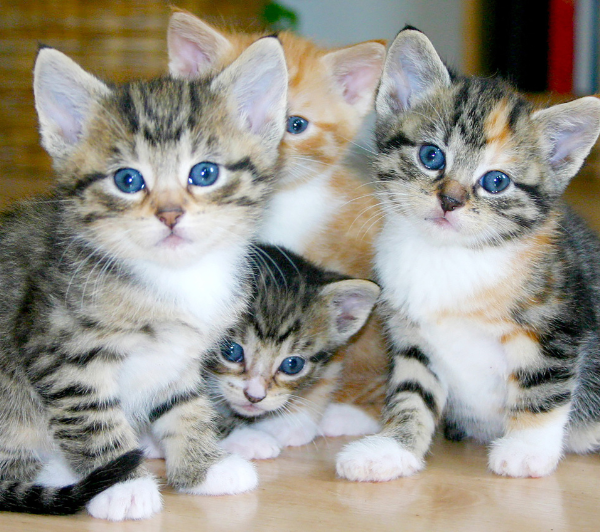

Gato Siamês
Originário da TailândiaTambém muito famoso, o siamês é originário da Tailândia, antigo Sião. Ele é facilmente reconhecido por seu corpo esguio, de coloração que varia do creme ao castanho claro, com focinho e extremidades mais escuras, além de brilhantes olhos azuis.

Foi a partir de sua chegada na Inglaterra, em 1884, que ele se espalhou pelo mundo e se tornou um dos gatos queridinhos em diversos países.
Bastante sociável, curioso, inteligente e disposto a vocalizar — ou seja, a miar — o gato siamês adora estar na companhia de pessoas e de outros animais. Por isso, são muito recomendados para famílias com crianças, ainda mais quando o pet é socializado desde cedo.
A pelagem do gato siamês é curta e com fios finos, podendo ser das cores preto, creme, bege, marrom (também conhecida como chocolate) ou branco. A cor do corpo é, em geral, mais clara e a das patas, cauda e focinho, ou seja, suas extremidades costumam ser mais "marcadas".
Gatos são como livros de história vivos, cheios de mistérios e segredos para descobrir.
Saúde
Em geral, os gatos siameses são considerados muito saudáveis, musculosos e atléticos, por serem muito ativos e brincalhões. No entanto, como todas as raças, os siameses também sofrem com alguns problemas genéticos mais comuns que podem gerar alguns problemas para eles. As principais são as doenças respiratórias, como por exemplo a asma e a doença brônquica, e as doenças cardíacas, como estenose aórtica. Obstrução nasal, cálculo na bexiga e outros problemas renais também são comuns na raça. Outra questão relacionada à saúde e que pede um pouco mais de atenção - e de exames veterinários - é uma doença chamada amiloidose, que é provocada pelo depósito da proteína amiloide em órgãos e tecidos do corpo (especialmente os rins e fígados) e é comum em gatos siameses.
Temperamento
Os gatos siameses são gatos muito dóceis, curiosos e brincalhões, são considerados gatos bastante sociáveis. No entanto, seu temperamento pode mudar de acordo com o dia, é quase impossível prever se o seu gato siamês estará mais carinhoso ou mais recluso.
Inteligência
Os siameses são gatos muito inteligentes: são curiosos e gostam de explorar a casa - por isso, se tiver um jardim ou um quintal, todo cuidado é pouco. Eles também conseguem aprender alguns truques. Quanto à obediência, apesar dos siameses serem gatos muito, muito, muito dóceis e companheiros, eles não são exatamente o que pode ser definido como obedientes. Claro que eles vão acompanhar os seus tutores em suas rotinas, mas ainda assim são gatos que gostam de ficar livres para fazerem o que sentem vontade. Além disso, são gatos muito expressivos e comunicativos: os gatos siameses vão miar, miar e miar até conseguirem o que querem.
Tempo de vida
Por serem considerados gatos muito saudáveis e atléticos, os gatos siameses têm a expectativa de vida longa, em geral de 15 a 20 anos. No entanto, é preciso prestar atenção aos problemas de saúde que exemplares da raça podem ter.
Cuidados
Por serem gatos muito ativos, é importante que seja possível dar atenção para eles e ter tempo disponível. Para distraí-lo, compre brinquedos e arranhadores. A opção de arrumar um outro - de preferência que também seja muito ativo - para fazer companhia também é bem-vinda dependendo de como seu gato é com o território. Além disso, por ser um gato curioso, ele pode tentar ir para a rua e para os vizinhos para explorar o ambiente. Por isso, é importante manter a casa devidamente telada.
Curiosidades
Os gatos siameses são originários da Tailândia e são a primeira raça do oriente. Eles têm uma história de herança real que vem desde o século XIV. Existe uma teoria de que as torções nas caudas dos siameses se desenvolveram porque eles guardavam os anéis das princesas. Muitos gatinhos que vemos por aí não são siameses. Eles apenas possuem cores parecidas com as da raça. O siamês é uma raça rara atualmente, sendo pouco encontrada aqui no Brasil. São gatos de rosto afinado e corpo esguio.